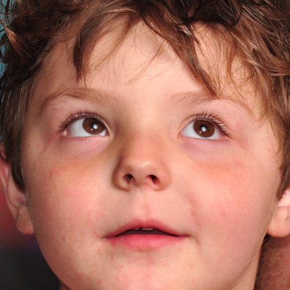

(a) Genuine photo, accused after smoothing
true class
genuine

retouching
service
original
accused
detector decision
after Smoothing-90
Effort
0.11 genuine
0.72 forged
Forensics
Ad.
0.17 genuine
0.95 forged
GenD
0.19 genuine
0.97 forged
DFD-HR
0.27 genuine
0.94 forged
(b) Deepfake, missed after a beauty preset
true class
forged
(face swap)
beauty
app
as recorded
missed
detector decision
after the preset
Effort
0.97 forged
0.44 genuine
Forensics
Ad.
1.00 forged
0.67 genuine
GenD
0.89 forged
0.70 genuine
DFD-HR
0.99 forged
0.74 forged
bars: each detector's forgery score · black tick: its own threshold, set at 5% false alarms on untouched genuine faces of the same source